Descripción corta del challenge
Partiendo de datos recabados en la web de ficheros csv, se procesarán dichos datos y se obtendrán insights de negocio, siguiendo estos pasos:
- Diseño del datamart.
- Diseño y ejecución de los procesos ETL necesarios (Pentaho PDI).
- Explotación de la información en PowerBI.
Contexto
Se propone un caso basado en datos del Grupo World Bank. Los indicadores de la burocracia mundial (WWBI) son un conjunto de datos sobre el empleo y los salarios del sector público que pueden ayudar a los investigadores y profesionales del desarrollo a obtener una mejor comprensión de las dimensiones del personal contratado por los estados, la huella del sector público en el mercado laboral general y en el fiscal las implicaciones de la factura salarial del gobierno.
El objetivo de WWBI es llenar el vacío de información sobre el personal del estado al proporcionar medidas más objetivas basadas en datos administrativos y encuestas de hogares, lo que complementará los enfoques existentes basados en la percepción de expertos.
Cuestiones
Punto 1 - enunciado
Análisis de los datos de origen en el que se detallen los campos que se encuentran en los ficheros. Boceto del diagrama entidad-relación del modelo.
Punto 1 - solución
Se examinan los dos csv que se nos suministran.
· Csv Country: contiene un listado de países, con campos que recogen información de diversos aspectos acerca de dichos países: nombre, código del país, región a la que pertenece, y una serie de indicadores para caracterizar el país, sobre todo desde el punto de vista económico-financiero.
o Llama la atención que hay algunos campos (adjunto captura de pantalla) en las que los datos no tienen un formato estandarizado. Habrá que tener cuidado con esto si más adelante decidimos usar esos datos.
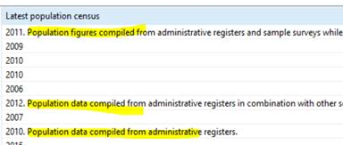
· Csv Data: contiene un listado de países, y para cada uno de ellos una serie de indicadores, y el valor de los mismos para cada año (2000-2016)
· Este es un boceto del Diagrama entidad-relación del datamart:
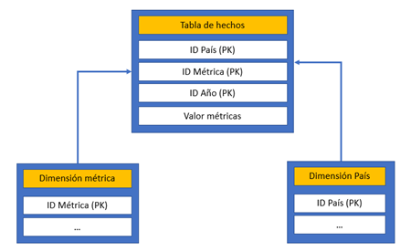
Punto 2 - enunciado
En este punto, se tiene que realizar la extracción de los ficheros CSV a una base de datos de staging, usando procesos de PDI.
Se debe crear la base de datos de staging y sus tablas, así como los procesos de carga.
- Primer paso: crear base de datos de staging y sus tablas, adjuntar el script de creación de las tablas.
- Respecto los procesos de carga, responder las siguientes preguntas:
o ¿Cuántas filas se han cargado en la tabla de staging País?
o ¿Cuántas filas se han cargado en la tabla de staging de datos?
o ¿Cuántas transformaciones has usado para realizar la carga?
o ¿Qué objetos has usado en estas transformaciones?
o ¿Has usado el componente Start?
Punto 2 – solución
Creamos las BBDD de staging (STG_BURO) y datawarehouse (DWH_BURO) en el SGBDR.
Creamos las tablas Country y Data que serán pobladas por los csvs (adjunto en fichero aparte los scripts de creación).
· Para cada columna en los csv, se crea su columna correspondiente en las tablas de la BD.
· En general, a todos los campos se les ha asignado un datatype varchar(50), menos a aquellos campos que se ha comprobado que sobrepasan esa longitud. Para estos, aumentamos la capacidad de caracteres.
En Spoon, diseñamos la Transformación que poblará las tablas de la BD de staging a partir de los csvs.
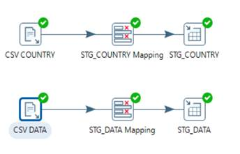
· Son ficheros de pequeño tamaño así que los incluimos a ambos en la misma transformación
Respondemos a las preguntas que se nos plantean:
¿Cuántas filas se han cargado en la tabla de staging País?
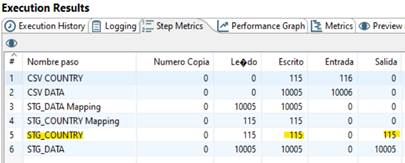
¿Cuántas filas se han cargado en la tabla de staging de datos?
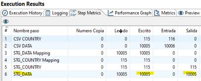
¿Cuántas transformaciones has usado para realizar la carga?
Una transformación (sólo estoy utilizando un fichero Transformación en PDI), que incluye pasos para hacer la extracción de los dos csvs que disponemos.
¿Qué objetos has usado en estas transformaciones?
Entrada csv, mapeo de los campos, salida tabla.
¿Has usado el componente Start?
No, Start lo usaremos cuando orquestemos el Trabajo a partir de todas las Transformaciones creadas.
Punto 3 - enunciado
En este punto se tiene que realizar las transformaciones y carga de los datos desde la base de datos de staging al data warehouse.
Para ello, se debe crear una base de datos data warehouse y sus tablas. Estas se cargarán usando PDI.
- Crear el datamart WWBI y las tablas. Adjuntar scripts de creación de tablas.
- Realizar las transformaciones necesarias para cargar el datamart usando PDI.
- Responder las siguientes preguntas:
o ¿Cómo se ha cargado la tabla “dim_metrica”? ¿Cuál es su origen?
o ¿Qué componentes se han usado para crear la tabla de hechos?
o ¿Cuántas filas se han cargado en la tabla de hechos?
o ¿Por qué se han multiplicado el número de filas de la tabla de hechos?
Punto 3 – solución
Creamos las tablas del datamart conforme al DER que se mostró en el Punto 1, asignando también las primary keys. Al crear los campos que componen las tablas del datamart, tenemos en cuenta cuál es la información que queremos utilizar (adjunto los scripts de creación de tabla en fichero aparte):
· NOTA: A diferencia de en las tablas de staging donde todos los campos tenían datatype varchar, en este caso prestamos atención a los tipos de datos con lo que vamos a trabajar: números enteros, decimales, caracteres (de mayor o menor longitud), lo cual facilitará el trabajo en las herramientas analíticas.
· Tabla DIM_PAIS: Nos interesa el ID del país (PK), DESC del país y la región, y el Income Group, ya que son los aspectos de la dimensión que usaremos en los análisis posteriores con SQL y PowerBI.
o Dentro de la tabla STG_PAIS tenemos más información acerca de cada país. Quizá sean especialmente interesantes algunas variables categóricas (con un conjunto pequeño de valores posibles) como “Lending category”, “System of trade”, “Government accounting concept”, etc; y algunas variables numéricas como “National accounts base year” o “Latest population census”.
o Se podría considerar incluir estas variables dentro de nuestro datamart, en el caso de que consideremos que para otra persona le pudiesen ser útiles para hacer otro tipo de análisis sobre estos datos. Eso sí, algunos de los datos presentes en estas variables no se ajustan a un formato estandarizado. En ese caso, habría que definir un formato estándar para los mismos y ajustar los datos a dicho estándar, antes de cargarlos en el datamart
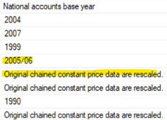
o Considero que estas tareas de selección y estandarización de otras variables se escapan al objetivo de este ejercicio, es por eso que NO las he incluido en mi datamart.
· Tabla DIM_METRICA: Dos columnas que proceden de STG_DATA: ID (PK) y DES de la métrica.
· Tabla FACT_BURO: Contiene los IDs de las tablas de dimensiones (ID_PAIS, ID_METRICA), además de la columna ID_AÑO (se podría haber considerado crear una tercera tabla de dimensiones con la dimensión tiempo, con una única columna ID_AÑO. Pero para los propósitos de este ejercicio considero que no aporta nada tener una tabla de esas características, por eso NO la he creado). La combinación de estas tres columnas es la primary key de esta tabla. Además, tenemos una columna IN_VALUE donde se almacenarán los valores de las métricas.
Una vez hecho esto, diseñamos en PDI las transformaciones necesarias para cada tabla:
· Tablas de DIMENSIONES:
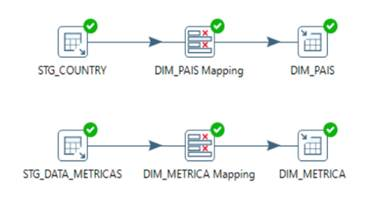
o Para seleccionar las columnas que nos interesan, lo hacemos en los objetos “entrada tabla” a través de una consulta SQL.
Para la tabla de métricas:
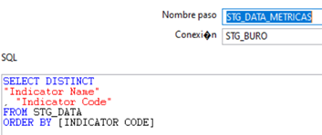
Para la tabla de países:
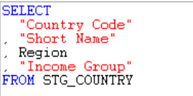
· Tabla de HECHOS:
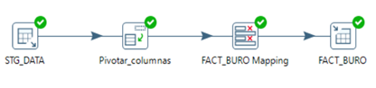
o En el objeto de Entrada tabla, con una consulta SQL incluimos las columnas con las que vamos a trabajar.
o Con objeto Normalizar filas, pivotamos las columnas de tal forma que obtengamos una columna con el año para el que se tiene el valor de una métrica, y otra columna que almacene el valor en cuestión.
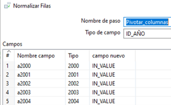
Respondemos a las preguntas que se nos plantean:
¿Cómo se ha cargado la tabla “dim_metrica”? ¿Cuál es su origen?
Como ya se comentó anteriormente, se seleccionan las columnas id y descripción de métrica de la tabla STG_DATA. Al ser una tabla de dimensiones, seleccionamos únicamente los valores distintos ya que no tiene sentido tener valores duplicados, nos quedamos con 87 métricas en total.
¿Qué componentes se han usado para crear la tabla de hechos?
También se ha mostrado anteriormente: Entrada tabla > Normalizar fila > mapeado > salida tabla.
¿Cuántas filas se han cargado en la tabla de hechos?
170085
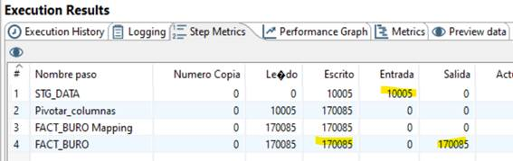
¿Por qué se han multiplicado el número de filas de la tabla de hechos?
Porque al pivotar la tabla estamos reduciendo el número de columnas, pero estamos aumentando el número de filas ya que, para cada país y métrica, en vez de tener un registro con columnas para cada año tenemos 17 registros, cada una indicando un año en el intervalo 2000-2016. Por eso el número de filas inicial (10005) se multiplica por 17 (170085).
Punto 4 - enunciado
Crear la tarea que permita cargar todo el datamart desde los origenes > staging > datamart.
- ¿Se ha usado una transformación o una tarea?
- ¿Por qué?
- ¿Qué tipo de objetos se han usado?
Punto 4 – solución
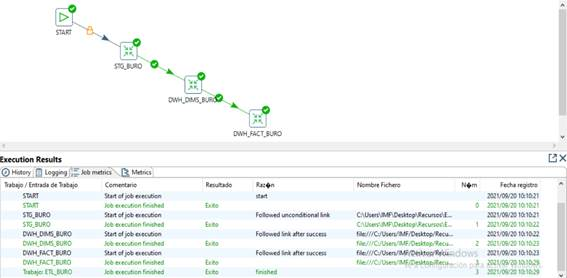
NOTA: una vez ejecutado el job, con los datos ya cargados en el datamart, se podría considerar establecer dos foreign keys (ID_METRICA e ID_PAIS) en la tabla de hechos, para garantizar la integridad referencial. Así estaríamos estableciendo las relaciones entre las diferentes tablas de la BD, y evitaríamos que se introduzcan datos en la tabla de hechos conteniendo países o métricas que no han sido declaradas previamente en las tablas de dimensiones.
Por otro lado, el establecimiento de estas restricciones supone que, si queremos volver a ejecutar el job para orquestar toda la ETL (por ejemplo, porque los datos de origen hayan sido actualizados), tendríamos que eliminar previamente estas restricciones y luego volver a imponerlas, de lo contrario impedirán que se ejecute correctamente.
Supongo que la decisión correcta (establecer FKs o no) depende de la casuísticas que rodeen a un proyecto de estas características en el mundo real. Para este ejercicio, por motivos de simplicidad, se ha escogido NO establecer foreign keys.
¿Se ha usado una transformación o una tarea?
Se ha usado un Job en PDI.
¿Por qué?
Para orquestar de forma secuencial todas las transformaciones que habíamos creado previamente. De esta forma, para ocasiones futuras en las que se quiera repetir el mismo proceso de ETL, por ejemplo una vez se actualicen los ficheros csv por parte de World Bank, se podrá realizar de forma automática repitiendo las mismas operaciones hechas ahora (siempre y cuando no haya cambiado la estructura de los csv de origen, claro).
¿Qué tipo de objetos se han usado?
Un objeto Start al principio, y una secuencia de las Transformaciones diseñadas después.
Punto 5 – enunciado
Crear un informe en PowerBI accediendo a la información del datamart recién cargado.
Indicar la estructura del modelo de datos. Definir las tablas, sus relaciones y cardinalidades.
Punto 5 – solución
Abrimos PowerBI y obtenemos datos de nuestra BD “DWH_BURO”.
Como ya se explicó en la resolución del Punto 1 y el Punto 3, el DER (modelo de datos) ya lo hemos definido, y además ya se han asignado las claves primarias. Al cargar esta BD en PowerBI ya nos aparecen las tablas con sus correspondientes relaciones:
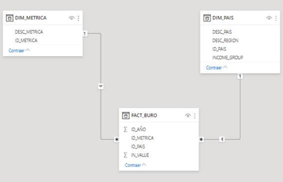
Es un datamart con modelo en estrella, donde las tablas de dimensiones tienen una cardinalidad 1->N respecto a la tabla de hechos.
Punto 6 - enunciado
Crear las siguientes visualizaciones, adjuntar comentarios de por qué se eligió cada tipo de visualización, así como capturas de pantalla con los gráficos. Responder a las preguntas realizadas
Punto 6 - solución
Visualización 1
Evolución en el tiempo del “Empleo del sector público como parte del empleo remunerado” y el “Empleo del sector público como parte del empleo formal” para Argentina.
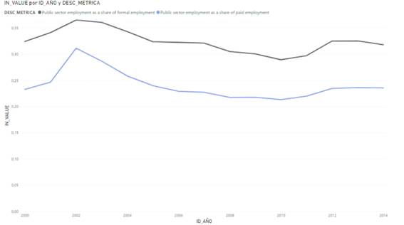
¿Qué tipo de gráfico se ha usado y por qué?
Gráfico de líneas, porque permite analizar con facilidad la evolución en el tiempo de una variable numérica (en este caso, valores de métricas). Nos permite detectar tendencias y hacer comparaciones de una forma muy inmediata.
¿Qué campo se ha usado para filtrar los datos?
El campo “ID_PAIS” para obtener sólo la métrica para Argentina, y el campo “ID_METRICA” para escoger sólo las dos métricas por las que nos preguntaban.
¿Qué campo se ha usado para el eje de la gráfica?
“ID_AÑO”
¿Y en la leyenda?
El campo “ID_METRICA”
¿Qué campo se usó para mostrar como valores?
El campo “IN_VALUE”
Visualización 2
Evaluar la edad media de los empleados del sector privado y público por región.
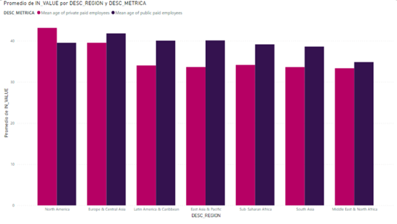
¿Qué tipo de gráfico se ha usado y por qué?
Un gráfico de columnas agrupadas. Se escoge el gráfico de columnas porque es sencillo y útil a la hora de hacer la comparación de valores numéricos (en este caso las métricas), para un conjunto de variables categóricas. Y se escogen columnas agrupadas en vez de apiladas porque para este caso en concreto porque lo interesante aquí es ver las comparaciones entre media de edad del sector público y privado, y con columnas apiladas costaría más ver esto.
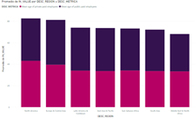
En el gráfico de columnas AGRUPADAS se ve claramente cómo la media de edad de los trabajadores del sector público es más alta que la del sector privado, en todo el mundo menos en Norteamérica.
¿Qué campo se ha usado para filtrar los datos?
“DESC_METRICA” para usar sólo las métricas que se nos han especificado
¿Qué campo se ha usado para el eje de la gráfica?
La variable categórica, “DESC_REGION”
¿Y en la leyenda?
“DESC_METRICA”
Nota: como valores utilizamos la variable numérica “IN_VALUE” con sus valores PROMEDIO.
Visualización 3
Realizar una gráfica del promedio del peso relativo de los cargos técnicos en los sectores privados y públicos a lo largo del tiempo. La gráfica debe permitir ver el total volumen de cada métrica y el total de ambas.

¿Qué tipo de gráfico se ha usado y por qué?
Gráfico de áreas apiladas. Al ser una evolución en el tiempo, creo que la elección más conveniente se reducía a gráficos de líneas o áreas. En este caso se escoge áreas apiladas porque se especifica que se quiere ver el total volumen de CADA métrica y el total de AMBAS. Se ve que el área marrón ocupa más que el área verde (es decir, el salario relativo de los perfiles técnicos en el sector privado es ligeramente superior), y se ve que en su conjunto los perfiles técnicos experimentaron unos picos de salario entorno a los años 2008 y 2014.
¿Qué campo se ha usado para filtrar los datos?
“DESC_METRICA”, por las métricas especificadas.
¿Qué campo se ha usado para el eje de la gráfica?
“ID_AÑO”
¿Y en la leyenda?
“DESC_METRICA”
Nota: como valores, promedio de “IN_VALUE”
Visualización 4
Obtener el promedio del peso por región del gasto en empleados públicos respecto al GDP y el gasto público.
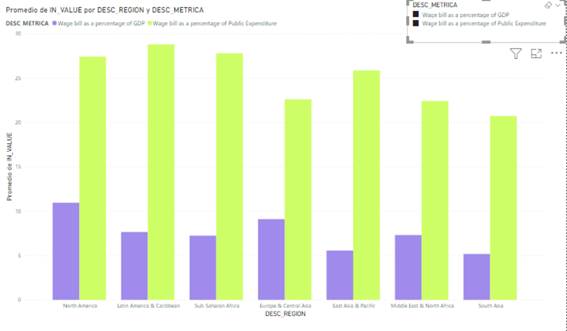
¿Qué tipo de gráfico se ha usado y por qué?
En esencia, me ha parecido que el análisis es similar al que hicimos en la visualización 2 (Evaluar la edad media de los empleados del sector privado y público por región), comparar dos métricas para diferentes regiones. Por eso he utilizado el mismo gráfico que para aquella visualización, uno de columnas agrupadas.
La única diferencia es que esta vez, como los valores de cada una de las dos métricas son bastante dispares y además la relación entre las dos cambia bastante según la región que se considere, me ha parecido buena idea insertar un filtro personalizable por el usuario (arriba a la derecha en la captura insertada). Así, además de analizar conjuntamente las dos métricas (en este caso no tiene mucho sentido, es evidente que el el peso de los salarios será mayor sobre el gasto público que sobre el GDP) las podemos analizar por separado.
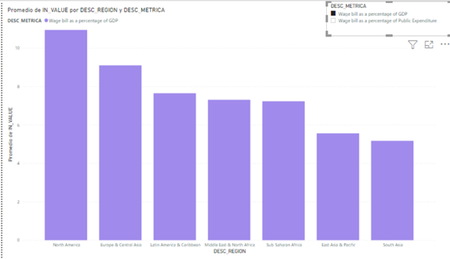
Si analizamos solamente el peso de las nóminas de los funcionarios respecto al GDP, vemos que es más alta en Norteamérica/Europa y más baja en Este/Sur Asia y Pacífico.
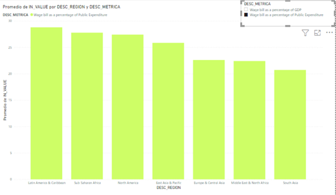
Si analizamos el peso de las nóminas de los funcionarios respecto al gasto público, vemos que (a excepción de Sur Asia que nuevamente tiene un valor muy bajo) las regiones que destacan por arriba o por abajo en este gráfico son diferentes a las del anterior gráfico.
Como idea, decir que se podría valorar la utilización de mapas para este tipo de visualizaciones, pero no funcionaban bien. Al escoger “DESC_METRICA” como Ubicación, no reconocía bien algunas regiones.
¿Qué campo se ha usado para filtrar los datos?
“DESC_METRICA”
¿Qué campo se ha usado para el eje de la gráfica?
“DESC_REGION”
¿Y en la leyenda?
“DESC_METRICA”
¿Y en los valores?
Promedio de “IN_VALUE”